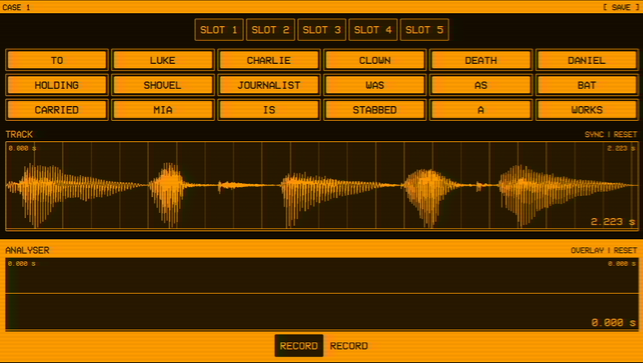
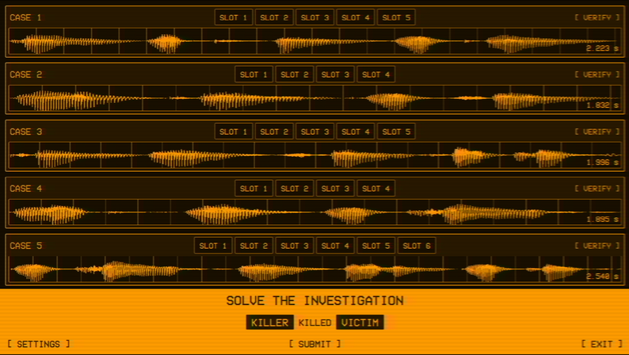
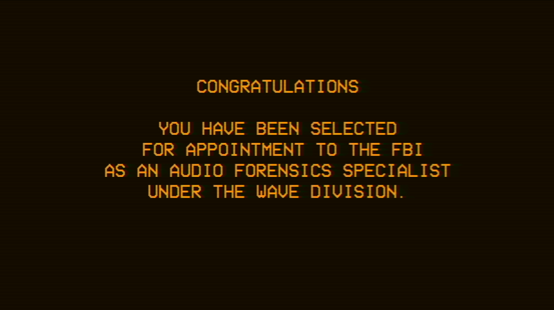

Turn sound into an object
Waveforms give each spoken fragment a visible shape, making an invisible medium concrete enough to inspect and rearrange.
A waveform investigation game where every recording is a crime scene and every frequency might be evidence.
Reconstruct distorted recordings, identify hidden details, and turn sound into a solvable chain of evidence.
Run the complete browser build here, or open it directly on itch.io.
Players join the fictional FBI WAVE Division as an Audio Forensics Specialist. Rather than reading a conventional case file, they inspect corrupted recordings, separate fragments, and listen for the relationships that reveal what happened.
Waveforms give each spoken fragment a visible shape, making an invisible medium concrete enough to inspect and rearrange.
A single click-and-drag control keeps attention on recording, moving, and comparing evidence instead of learning a dense toolset.
Slots, labels, and persistent case rows organize a growing investigation without losing the stark intelligence-terminal atmosphere.
The analyser turns fragments into a working sentence. The case board carries those reconstructed statements forward until the player has enough evidence to identify the killer and victim.


Amber monochrome, scan lines, compact typography, and spare terminal framing unify the interface. The result feels institutional and slightly unstable while preserving a clear hierarchy across controls, waveforms, and evidence.
An institutional boot sequence and terse appointment message place the player inside the WAVE Division before the investigation interface appears.

A complete browser-playable investigation that makes listening, sequencing, and deduction part of one coherent interface.